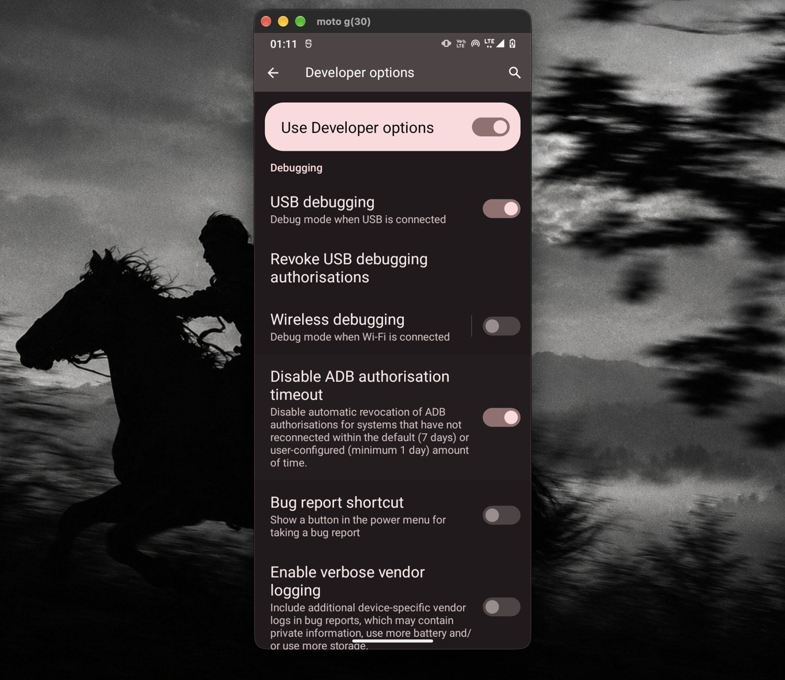
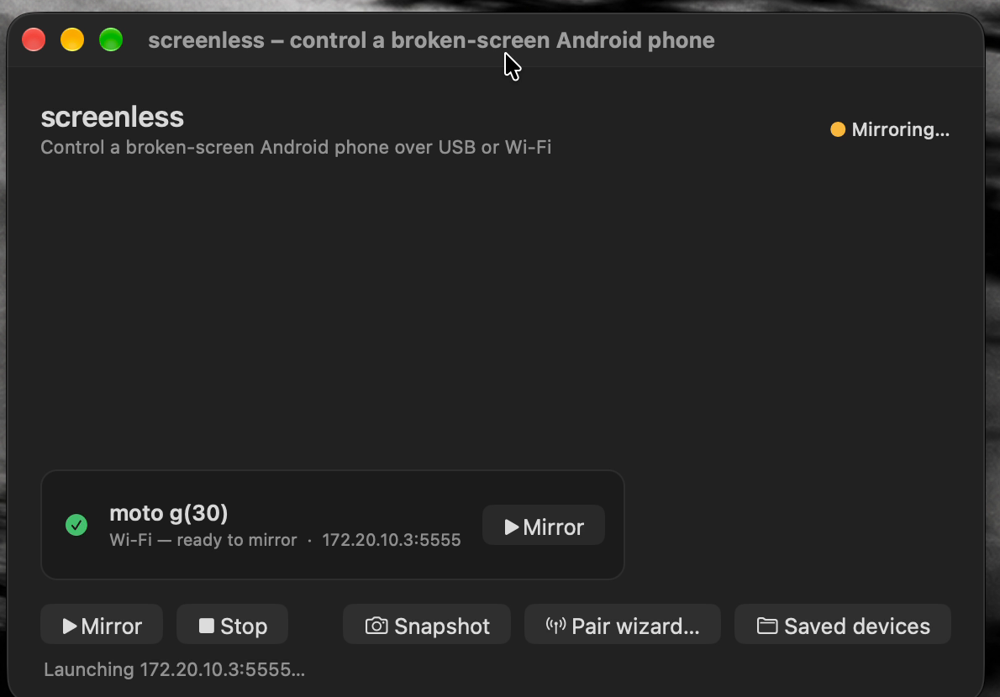
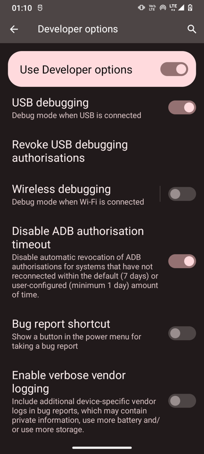

Use an Android phone with a broken screen from any laptop. See it in a window and control it with your mouse and keyboard, over USB or Wi-Fi.

Everything in this clip is driven from the laptop. The phone's own display is off.
Settings → Chrome → this website, scrolled with the mouse. Recorded straight from the phone with scrcpy --record.
Double-click Phone. USB if the cable's in, Wi-Fi if not. Quality is tuned for each, and the phone's IP is remembered.
Mouse, keyboard, clipboard and pattern unlock from the laptop. The phone's damaged display stays off.
Run once over USB and it switches the phone into wireless mode. After that, no cable.
Copy the phone's trusted key to a friend's laptop and it connects with no "Allow?" prompt.
Reversible tuning: quicker animations, stay-awake, bloatware off. +210 MB free RAM on a moto g30.
Your phone as a card, one click to mirror, reconnects by itself. Native Swift, 308 KB.
Open OpenCode or Claude Code in the folder and say “connect my phone”. It follows AGENTS.md.
Typing a command every time got old, so it became an app.
It's a small native Mac app, 308 KB, written in Swift. Your phone shows up as a card. Click Mirror and it's on your screen, over Wi-Fi or USB. If the Wi-Fi drops for a second, it reconnects on its own. Everything in the clip below runs from the Mac, with the phone's own screen off and no cable plugged in.

What's in it:
cd screenless/app/macos ./build.sh --install
Settings → About phone → tap Build number 7×. Then Developer options → USB debugging ON and Disable ADB authorisation timeout ON.

Installs scrcpy and puts a “Phone” shortcut on your Desktop.
git clone https://github.com/prutxvi/screenless C:\screenless cd C:\screenless\windows powershell -ExecutionPolicy Bypass -File .\install.ps1
First time only: tap Always allow on the phone. The mirror opens.
Unplug, double-click Phone again. Same Wi-Fi network needed.
On a Mac, use Cmd instead of Alt.
| Before | After | What changed | |
|---|---|---|---|
| Free RAM | 650 MB | 860 MB | 12 background bloat apps disabled |
| Animations | 1.0× | 0.5× | Screens open about twice as fast |
| Mirror black on Wi-Fi | Yes | No | Stay-awake that works without charging |
| Wi-Fi ping, 2.4 GHz hotspot | 166 ms avg | — | Network-bound: use 5 GHz or USB |